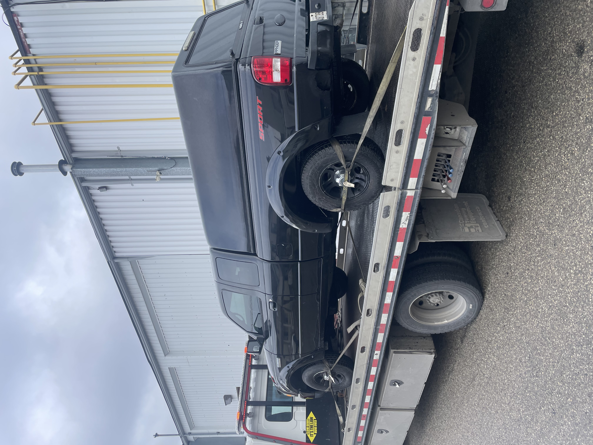

Free towing. Same-day pickup. Instant cash on the spot. We buy any car, any condition, anywhere in Scarborough and the GTA.
What We Do
Whether your car runs or not, we'll take it off your hands and put cash in your pocket — fast.

We pick up your scrap vehicle and haul it away. Running or not, we take it off your hands fast.
We make you a cash offer on the spot. No hidden fees, no waiting around for a cheque.
Our tow truck comes to you at no charge. Towing is always included in your cash offer.
Call in the morning and your car can be gone the same day. We move fast and show up when we say we will.
Simple Process
Selling your junk car has never been easier. We've stripped out all the complexity.
Call (647) 204-4200 and tell us about your car — year, make, model, and condition. We'll give you an instant cash offer over the phone.
Accept our offer and pick a time that works for you — even same-day. We send a tow truck to your location, completely free.
Our driver hands you cash on the spot, takes the keys, and hauls your car away. Done. No waiting, no cheques.
Where We Operate
We serve Scarborough and all surrounding communities. If you're in the GTA, we'll come to you.
Not sure if we cover your area? Give us a call — we'll let you know right away.
About Us
Scrappy Car is a locally owned and operated scrap car removal business based right here in Scarborough, Ontario. We know this community because we live and work in it.
We're not a national chain or a middleman — when you call us, you're dealing directly with the owner. That means honest pricing, reliable service, and a team that genuinely cares about doing right by our neighbours.
With years of experience buying junk cars across Scarborough and the GTA, we've made the process as simple and stress-free as possible. Our goal is to make it easy for you to get rid of that old vehicle and walk away with cash in hand.
📍 125 Island Rd, Scarborough, ON
Who We Are
We're not a call centre or a national chain. We're two guys from Scarborough who built this business from the ground up.
Scarborough local. Been pulling cars apart since I was a teenager in my dad's driveway. Started Scrappy Car because I knew there was a better way to treat people selling their old cars.
Grew up in Port Union. I've lived in this neighbourhood my whole life and I take pride in running a business that actually does right by the people in it.
FAQ
Everything you need to know about selling your junk car in Scarborough and the GTA.
Ready to Go?
Free towing. Same-day pickup. Instant payment. Serving Scarborough & GTA.
📞 (647) 204-4200Available 7 days a week · Fast response · No obligation